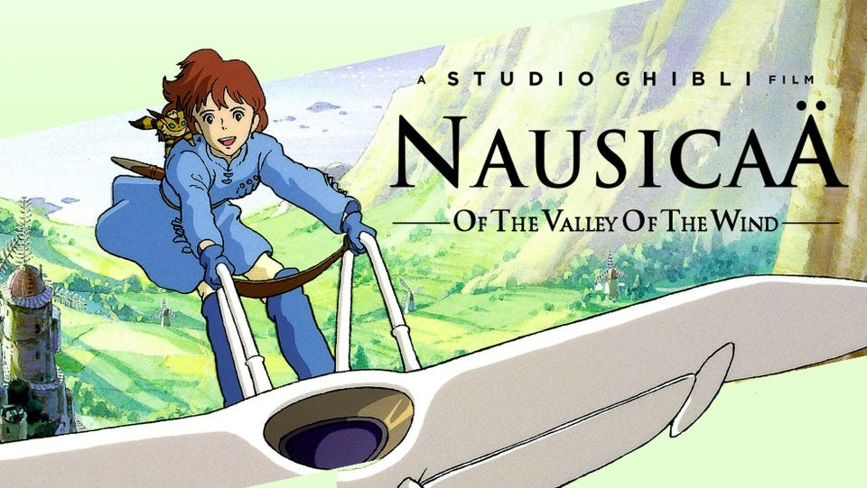
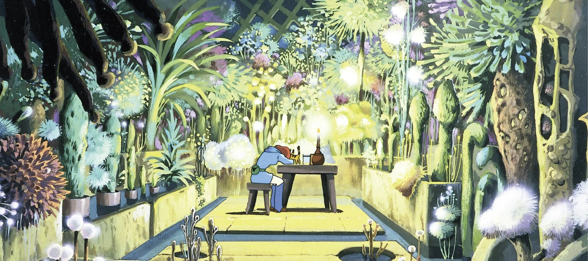

-

Nausica Page New Nausicaä of the Valley of the Wind is a 1984 Japanese animated post-apocalyptic fantasy film written and directed by Hayao Miyazaki, based on his 1982 manga of the same name. It was produced by Topcraft Limited Company and distributed by Toei Company.
see details -

Poster as a Site of Memory: Rereading Nausicaä of the Valley of the Wind Four Decades Later It is undeniable that Nausicaä of the Valley of the Wind occupies a singular position in the history of animation. Released more than forty years ago, prior even to the formal establishment of Studio Ghibli, the film already encapsulated the creative DNA of Hayao Miyazaki that would later become historically significant: ecological sensitivity, moral complexity, and a belief in coexistence rather than domination. Through the figures of the Ohmu and the Sea of Corruption, nature is portrayed not as a passive background but as a living entity that reacts to human greed and imbalance. Unsurprisingly, Nausicaä continues to feel deeply relevant today, particularly across Asia, where environmental issues persistently shape everyday life.
see the original source